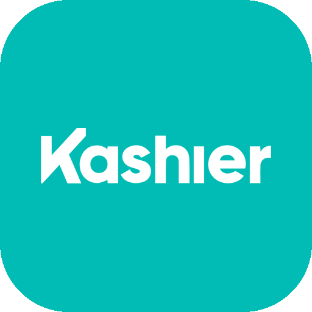
Take card, mobile wallet and instalment payments with Kashier on your Odoo website, quotations and invoices in Egypt. Customers pay on Kashier's secure page; Odoo asks Kashier for the result before the order moves on.
Odoo 20.0 Community & Enterprise EGP · USD · GBP · EUR Visa · Mastercard · Meeza Wallets, instalments & valU Saved cards Refunds & manual capture Arabic & English payment page
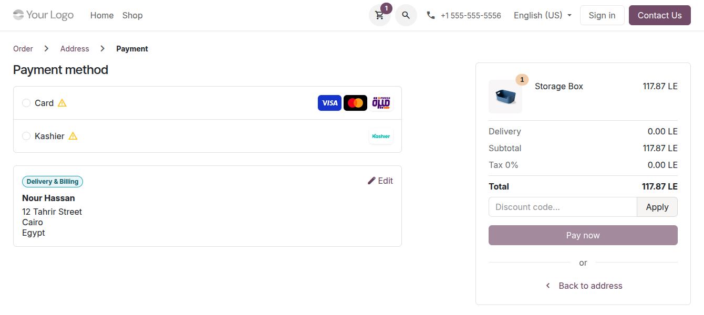
At checkout, customers choose Card (Visa, Mastercard, Meeza) or Kashier, which offers every method of your Kashier account.
Kashier is an Egyptian payment gateway. This module adds it to Odoo as a payment provider: your eCommerce checkout, the quotations and orders your customers accept and pay in their portal, their invoices and your payment links all open Kashier's payment page, and every result is checked with Kashier before Odoo acts on it.
Customers are sent to Kashier's hosted payment page and type their card there, never in Odoo: card data stays in Kashier's PCI scope. The page shows the store name of your Kashier account.
Card: Visa, Mastercard and Meeza with 3-D Secure. Kashier: every method enabled on your account, such as cards, mobile wallets, instalments and buy now, pay later (valU). One setting narrows it down.
Kashier's page opens in the customer's language, Arabic or English. Messages to customers name your company, never Odoo; Kashier's technical codes are kept for your staff.
Full or partial, with the Refund button on the payment. When Kashier refuses a refund, your staff see Kashier's explanation on it.
With Capture Amount Manually, the card is only authorized at checkout. Your staff capture the full amount, or void it, from Odoo.
Cards are saved at Kashier; Odoo keeps only a token, the last 4 digits and the expiry. Returning customers type only the CVC, and invoices and subscriptions can charge the card without them.
The customer's return and Kashier's signed notifications only trigger a check: the status, the amount and the currency are read from Kashier with your Secret Key. A check every 15 minutes catches anything missed.
When Kashier doesn't answer a request that moves money (a timeout, a server error), the module doesn't send it again: the payment waits as pending and is checked with Kashier.
Paste three values from your Kashier dashboard and click Test Connection. The notification URL is sent with every payment, and a Kashier bank journal is created for each company.
| # | Who | What happens |
|---|---|---|
| 1 | Customer | Chooses Card or Kashier at checkout, on a quotation or order in the portal (Accept & Pay), on an invoice or from a payment link. |
| 2 | Odoo | Opens Kashier's hosted payment page, in the customer's language. |
| 3 | Customer | Pays on Kashier's page: a card with 3-D Secure, or another method of your Kashier account. After a decline, they can try again on the same page, up to the number of attempts you allow. |
| 4 | Kashier | Sends the customer back to your website and notifies Odoo. Both are signed by Kashier, and Odoo checks the signature. |
| 5 | Odoo | Reads the result from Kashier with your Secret Key, checks the amount and the currency, then confirms the payment, and the order or invoice follows. |
| 6 | Odoo | Every 15 minutes, checks the payments still open with Kashier, so a missed notification never leaves an order waiting. |
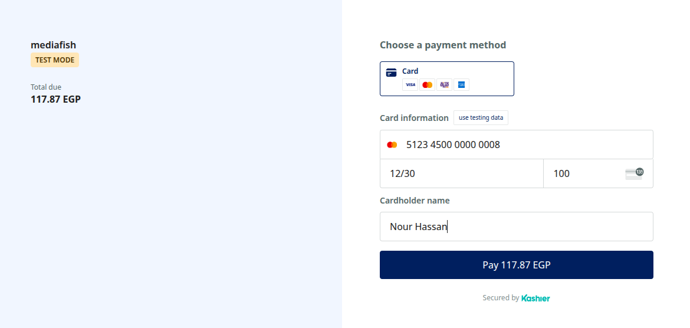
Kashier's secure page: the card is typed here, never in Odoo.
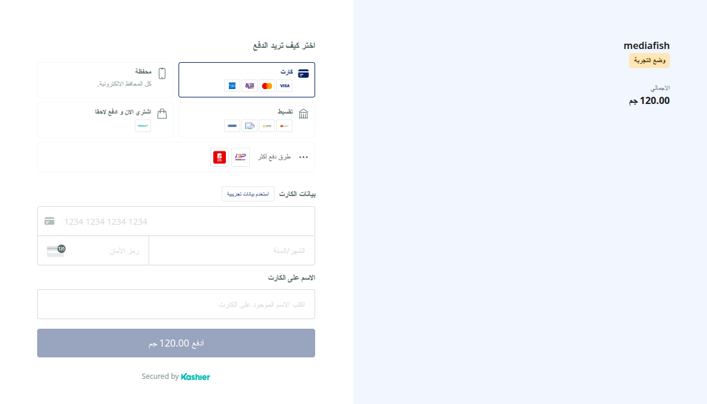
The Kashier choice, in Arabic: cards, wallets, instalments, buy now, pay later and more.
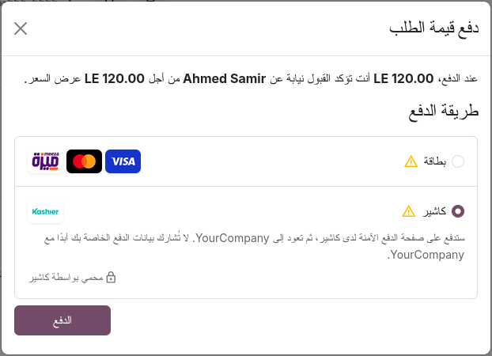
Paying a quotation from the customer portal, in Arabic.
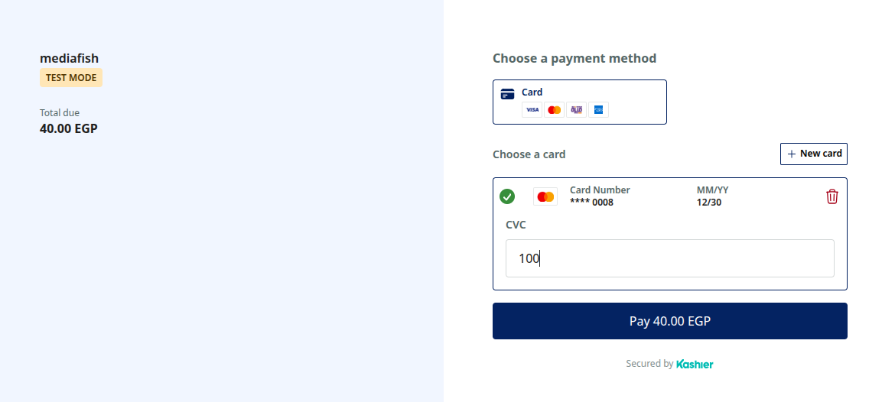
A saved card: the customer types only the CVC.
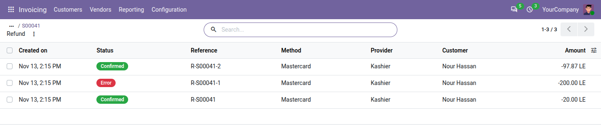
Partial refunds from Odoo; a refund larger than what remains is refused.
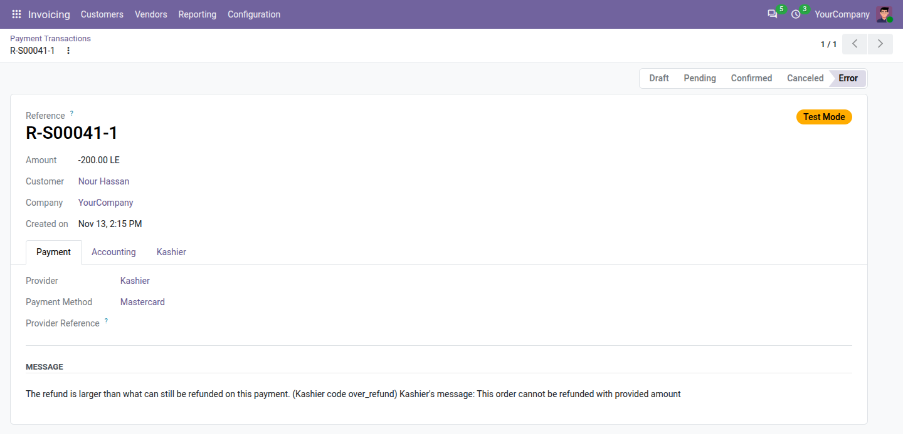
A refused refund, with Kashier's explanation for your staff.
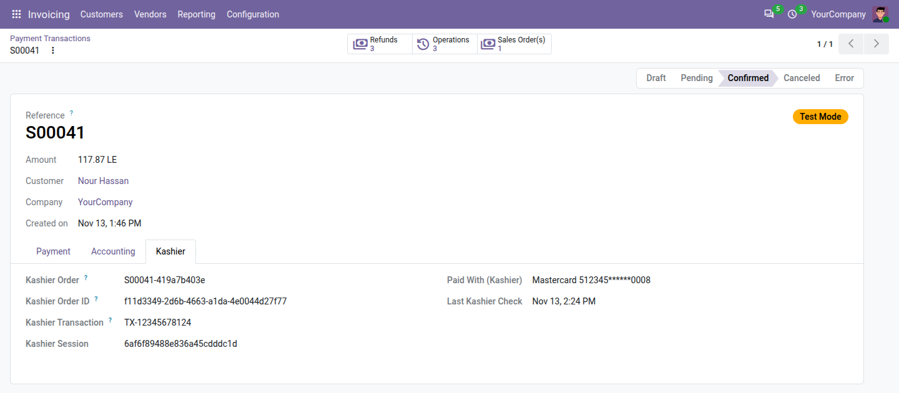
The Kashier tab of a payment: Kashier's references, the card used and the last status check.
https://<your domain>/payment/kashier_cf/webhook) is sent with every payment. Your website must be reachable over public https.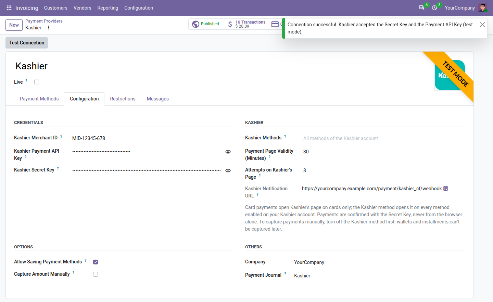
Credentials, Test Connection and the Kashier options.
| Setting | Default | What it does |
|---|---|---|
| Kashier Merchant ID | — | Your merchant ID, MID-… |
| Kashier Payment API Key | — | From your Kashier dashboard: Integrate now › Payment API keys |
| Kashier Secret Key | — | Reads every status from Kashier; from Integrate now › Secret key |
| Kashier Methods | Blank: all | Limits the Kashier choice, as a comma list, for example wallet, bnpl[valu] |
| Payment Page Validity (Minutes) | 30 | How long Kashier's page can be used, from 5 to 1,440 |
| Attempts on Kashier's Page | 3 | How many times a customer can try, from 1 to 5 |
| Kashier Notification URL | Read-only | Where Kashier notifies Odoo; sent with every payment |
| Allow Saving Payment Methods | Off | Lets logged-in customers save their card at Kashier |
| Capture Amount Manually | Off | Authorize at checkout, capture or void later (Card only) |
| Payment Journal | Kashier | The bank journal created at installation |
| Do card numbers reach Odoo? | No: they are typed on Kashier's page only. For a saved card, Odoo keeps a token, the last 4 digits and the expiry. |
| Which methods does the Kashier choice offer? | Every method enabled on your Kashier account. To show fewer, fill in Kashier Methods, for example wallet, bnpl[valu]. |
| Can I capture wallet or instalment payments later? | No: only Card supports authorization. Turn off the Kashier method before you turn on Capture Amount Manually. |
| Do I set the notification URL in Kashier's dashboard? | No: the module sends it with every payment. Your website must be reachable over public https. |
| Test Connection fails | Check that the keys match the mode: test keys in test mode, live keys in live mode. |
| Kashier didn't answer a payment request | The payment waits as pending and is checked again every 15 minutes; it is never sent twice. After 2 hours without an answer it goes to error: check Kashier's dashboard before trying again. |
| The customer paid after the page expired | Expired pages are watched for 48 hours: the payment is confirmed if Kashier received it. |
| We refunded from Kashier's dashboard | The refund is noted once on the order, so your staff can record it in Odoo. |
| Can several databases share one Kashier account? | Yes: each order reference carries a code of its database, and the same goes for several companies. |
| Will customers see "Odoo"? | No: customer messages name your company, and Kashier's page shows the store name of your Kashier account. |
| Odoo | 20.0, Community and Enterprise |
| Depends on | Payment and Invoicing (payment, account_payment); works with the eCommerce checkout, quotations and orders in the customer portal, portal invoices and payment links |
| Kashier | A Kashier merchant account, with its Merchant ID, Payment API Key and Secret Key |
| Currencies | EGP, USD, GBP and EUR |
| Languages | Kashier's page in Arabic and English, following the customer's language |
| Version | 20.0.1.0.0: first release |
Write to info@codefish.com.eg with your Odoo version and, for a payment issue, the payment reference. Never send your Kashier keys by email.
This module is not made by, endorsed by or affiliated with Kashier. Kashier and the Kashier logo are trademarks of their respective owner. Visa, Mastercard, Meeza and valU are trademarks of their respective owners.
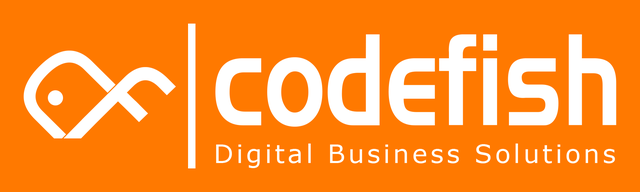
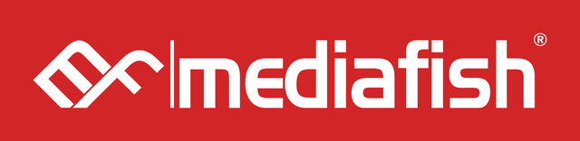